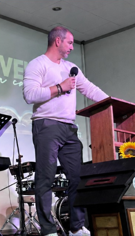

Jorge Lacayo Carmiol
“Que cada persona pueda sentir: aquí hay un lugar para ti.”
Leer testimonio completo
Para mí, el Equipo de Dirección es mucho más que conducir un culto: es el privilegio de dar la primera bienvenida, crear un ambiente de cercanía y preparar el corazón de cada persona para encontrarse con Dios.
Cada palabra, cada gesto y cada momento deben transmitirle a quien entra por primera vez: “Aquí hay un lugar para ti”. Que desde el primer instante pueda percibir una iglesia que desea servirle, recibirle con amor y conducirle hacia un mensaje nacido del anhelo de que conozca verdaderamente a Jesús.
Mi deseo es que cada persona que llegue a Cristo Viene encuentre bendición, esperanza y una familia de fe; y que, con el tiempo, pueda sentir que este también es su hogar.